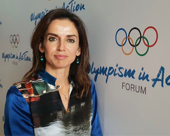
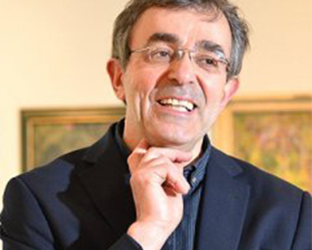
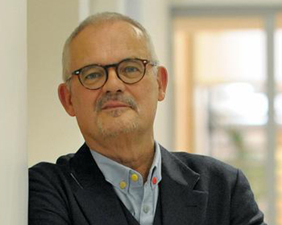

Cities of Culture
Research Network
Project summary
Resources &
About
About
Cities of Culture is an AHRC-funded research network that brings together academics, researchers, consultants and policy makers to better understand the UK Cities of Culture and European Capitals of Culture initiatives.
Project aims
Create a new interdisciplinary research network, achieve a better collective understanding of the medium and long-term effects of Cities of Culture, and explore how to create effective policy development.
Project partners
- Partner logo
- Partner logo
- Partner logo
The team
- 
- 
- 
Resources &
publications
- Resource from the University of Warwick
- Another resource from X location
- A project resource
- Yet another project resource with an extra long name from a different university
- Resource from University of Warwick
- If there are more resources they will spill over into a second coloumn
- Further resources continue
About
the project
The network reached across geographical, professional and disciplinary boundaries and barriers to bring together academics, postgraduate researchers, and national, international and local policymakers, all seeking to understand better the UK Cities of Culture (CoC) initiative. The network created a discursive space to exchange comparative knowledge, challenges and ideas relating to the value and policy direction of the CoC initiative by exploring the following:
- the sustainability of the cultural, image, social, spatial and economic impacts of CoC programmes;
- the main factors which since the early 1990s have affected, and are likely to influence in the future, policy makers’ use of evaluation research;
- how to fill the gaps between related knowledge on CoCs dispersed in time and place, and between the producers and potential users of that knowledge;
- possible ways of better connecting the evaluation of CoCs with future policy development.
Impact
To create a new interdisciplinary research network that brings together key academics, early career researchers and policy makers connected with CoCs and ECoCs;
To bring together expertise and evidence about different cities at different periods of time in order to achieve a better collective understanding of the medium and long-term effects of CoCs;
To explore conditions, mechanisms and procedures which would be required to turn findings from the evaluation of CoCs into effective policy development.